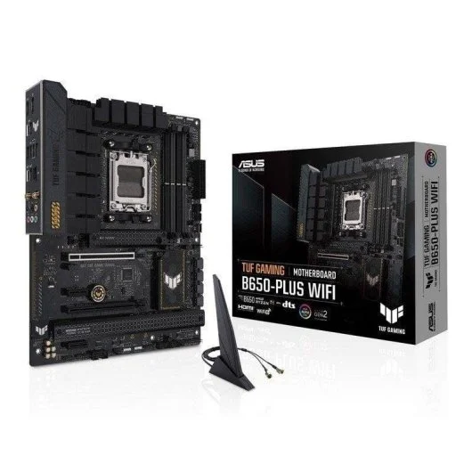
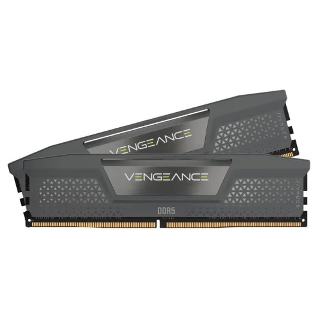
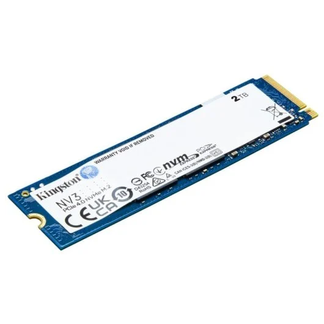
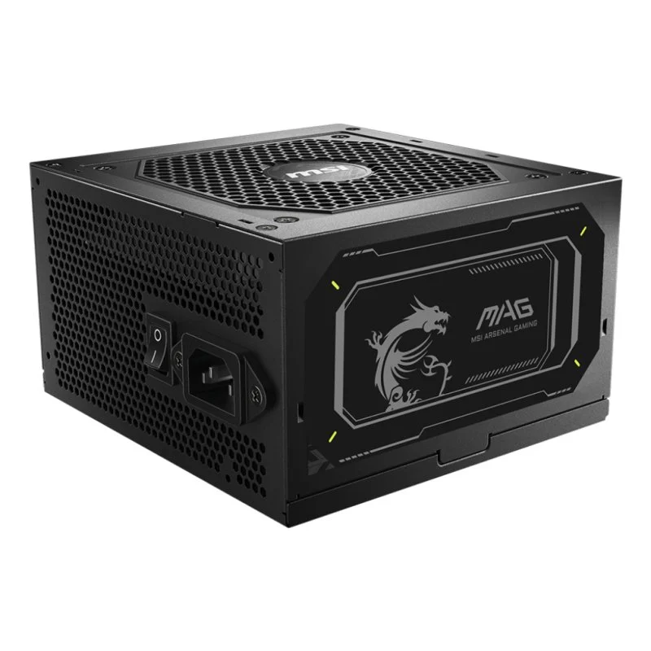

La placa base es uno de los principales componentes de un ordenador. A ella se conectan todo el resto de componentes, dispositivos y periféricos, por lo que hay que escogerla con mucho cuidado, ya que el resto de componentes deberán ser compatibles con la placa. Las características de la placa escogida son las siguientes:

Características
Marca y socket de procesador compatible: Intel LGA 1700
El procesador es el componente que realiza los cálculos y ejecuta las instrucciones de los programas, por lo que influye directamente en la velocidad del ordenador. Es importante elegirlo bien para que sea compatible con la placa base y para que tenga la potencia adecuada según el uso que se le va a dar al equipo. Las características del procesador seleccionado son las siguientes:
Características
Compatible con procesadores Intel 12ª, 13ª y 14ª generación.
Arquitectura híbrida con núcleos de alto rendimiento y eficiencia.
Soporte para memorias DDR4 y DDR5.
PCI Express 5.0 y 4.0 para gráficos y almacenamiento.
Mejor eficiencia energética y térmica
Soporte para overclocking.
Compatibilidad con tecnologías Wi-Fi 6E y USB 3.2 Gen 2.
La memoria RAM es un tipo de memoria rápida y temporal que almacena los datos que usa el ordenador mientras está encendido. Permite que el procesador acceda rápidamente a la información, mejorando el rendimiento y la multitarea. Es fundamental que sea compatible con la placa base y tenga la capacidad y velocidad adecuadas para el uso del equipo.

Características
Tipo: DDR4
Módulos: 4 ranuras
Capacidad máxima: 128 GB
Velocidad común: hasta 3200 MHz
Compatibilidad: con placas base y procesadores Intel socket LGA 1700
La memoria M.2 es un tipo de almacenamiento muy rápido y compacto que se conecta directamente a la placa base sin cables. Usa tecnología SSD y puede funcionar con el protocolo NVMe para alcanzar velocidades de hasta 3,000 MB/s o más, mucho más rápido que los discos SSD SATA tradicionales. Es ideal para almacenar el sistema operativo y programas, mejorando la velocidad general del ordenador

Características
Tipo: DDR4
Módulos: 4 ranuras
Capacidad máxima: 128 GB
Velocidad común: hasta 3200 MHz
Compatibilidad: con placas base y procesadores Intel socket LGA 1700
La torre o caja del ordenador es el chasis que protege y alberga la placa base junto con otros componentes como CPU, RAM y fuente de alimentación. Está diseñada para placas del mismo tamaño (microATX o ATX), con soportes para ventiladores, gestión de cables y puertos frontales USB. Su estructura vertical optimiza el flujo de aire y facilita la expansión.
La fuente de alimentación es un componente esencial del ordenador, responsable de suministrar energía eléctrica estable y segura a todos los demás elementos del sistema. Convierte la corriente alterna de la red eléctrica en corriente continua, necesaria para el funcionamiento de los componentes internos. Además, debe proporcionar la potencia adecuada y los conectores correctos para garantizar la compatibilidad con la placa base, la tarjeta gráfica y otros dispositivos. Elegir una fuente eficiente y fiable es fundamental para asegurar la estabilidad y la durabilidad del equipo.

Características
Potencia: 750 W
Certificación: 80 Plus Gold
Conectores: 1x ATX 24 pines, 2x CPU 8 pines, 4x PCIe 8 pines, 8x SATA
El monitor es un componente fundamental del ordenador, encargado de mostrar la información procesada por la tarjeta gráfica en forma de imagen. A través de él, el usuario puede interactuar visualmente con el sistema y disfrutar de contenido multimedia, videojuegos o trabajos gráficos. Es importante elegir un monitor con buena resolución, tasa de refresco y tipo de panel adecuados, ya que de ello depende la calidad visual y la comodidad durante el uso prolongado. Las características del monitor seleccionado son las siguientes: